The End of The Twitter Era
过去这两年，我一直在反复思考社交网络是如何走向死亡的。这对我来说是个格外私人的话题。2009 年，我搬去旧金山加入 Twitter。那时它还是一家围着一张大午餐桌就能坐下的创业公司；我离开时，它已经是拥有数千员工、数亿用户的大公司。
我在十年前离开了 Twitter，但这家公司永远是我人生中重要的一章。看着它的衰落，我总会想起一片又一片已经埋葬的旧网络。
Friendster 是我和社交媒体的初恋，是 2003 年夏天的一段短暂关系。技术问题让它频繁宕机，MySpace 因此趁势超车，在它来得及扎根前就把它甩开。Facebook 晚了一年上线，尽管产品更好，也花了四年才超过 MySpace。为什么只差一年，就能让 Facebook 的追赶如此艰难？
硅谷把这归因于网络效应。逻辑是：服务用户越多，服务本身就越有价值。AirBnB 的价值不在技术上，克隆一个网站并不难。AirBnB 的价值在 800 万房源和 1.5 亿用户。白手起家的复制品几乎没有意义，这也是为什么风投如此热衷投资这些事实垄断。
只要 Twitter 还在，Twitter 杀手就层出不穷。Pownce（2007）允许你在发帖时附带文件、活动和链接。Google 也下场推出了 Google Buzz（2010）和 Google Plus（2011），并与现有 Google 账号打通。App.Net（2012）则借第三方客户端争议获得势头。每个克隆品起步都很猛，但最终都撞上网络效应这堵墙，用户总会回到 Twitter。
这一次，感觉不一样了。收购两年后，我们看到的不是一个，而是三个发展良好的 Twitter 替代品。本月选举之后，Bluesky 领跑，每天新增注册超过 100 万。这些新服务看起来真的留住了用户。
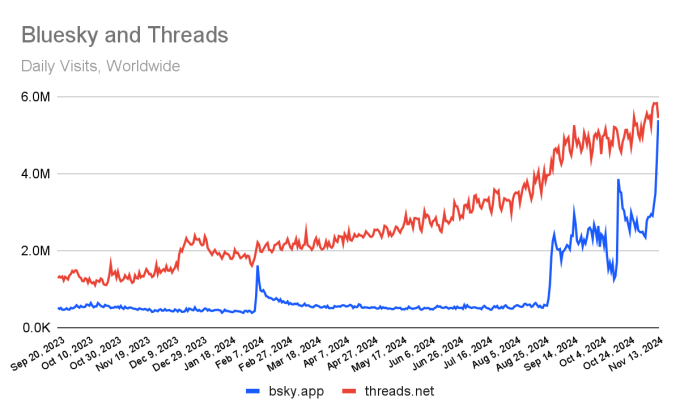
图表来自 Techcrunch
如果这股势头继续下去，接下来就不会像 MySpace 那样缓慢衰退，而会更像 Digg 向 Reddit 的骤然切换。
Digg 成立于 2004 年，Reddit 在六个月后跟进。Reddit 一开始没能破圈，2006 年以1000 万美元卖给 Condé Nast；考虑到 Digg 到 2008 年还传出 2 亿美元收购谈判，这个退出成绩并不亮眼。创业公司卖给大公司后，我们通常会以为它的好日子结束了；但 2010 年，Digg 产品改版引发巨大反弹，Reddit 反而迎来爆发。
网络效应到底发生了什么？Twitter 会像 MySpace 那样慢慢死去，还是像 Digg 那样突然崩塌？后来者能继承它的遗产吗？我先剧透答案：不能。因为 Twitter 的时代已经过去了。
我十年前离职后，通常不会写在 Twitter 的经历，一方面是沉湎过去并不健康，另一方面是我很难在不夹杂私人情绪的前提下回看那段历史。
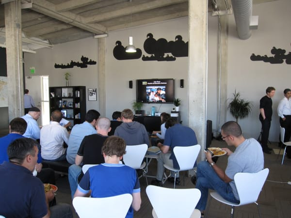
2009 年的 twoffice，照片来自它已经停更的 Flickr 账号
但与此同时，我在那里也学到了很多。我亲眼见过微小改动如何极大加速增长。我经历过 Twitter 与 Facebook 围绕社交图谱的攻防，也亲身卷入过不止一次舆论反弹。十年后再看，也许我终于可以拆解一些教训了。
Metcalfe's Law
能不能用一个具体数字去衡量社交网络的威力，就像 RPG 里角色的“经验值”一样？
你当然可以数每月活跃用户。这对上市公司季度披露来说已经够用了。但活跃用户数很容易误导。
当一款应用爆红时，可能有几百万人注册，花五分钟看一眼，然后耸耸肩离开，再也不回来。在大厂术语里，这叫 churn（流失），而流失曾是 Twitter 最大的敌人。突发新闻和名人确实给平台带来惊人的免费曝光，带来大量注册，但其中很大一部分很快就流失了。
衡量社交网络价值其实有更好的方法，我们要感谢互联网历史上的关键人物 Bob Metcalfe。Metcalfe 发明了以太网等技术。1980 年，他对计算机网络做出一条开创性观察，后来常被套用到社交网络：网络的价值不在节点（人），而在节点之间的连接。
电话网络是完美例子，因为任何加入网络的人都能呼叫其他任何人。我给波士顿的表亲打电话，和给莱索托的陌生人打电话一样容易。这个图里如果有两个节点，就只有一条连接：
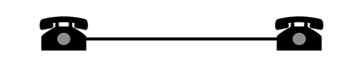
来源：Wikipedia
当有五个节点时，就有十条连接：
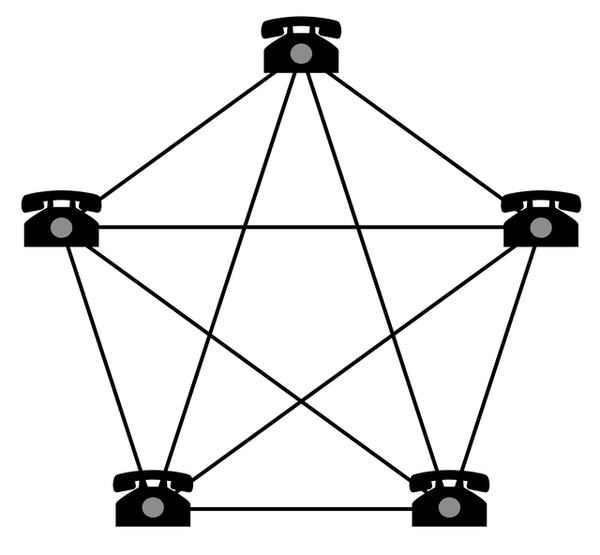
蓝色：节点。红色：连接。
当有十二个节点时，就是 66 条连接。
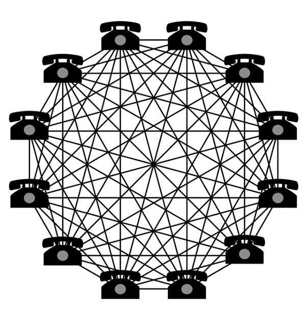
蓝色：节点。红色：连接。
这意味着一个完全连通网络的价值按 N * (N - 1) * 2 增长。
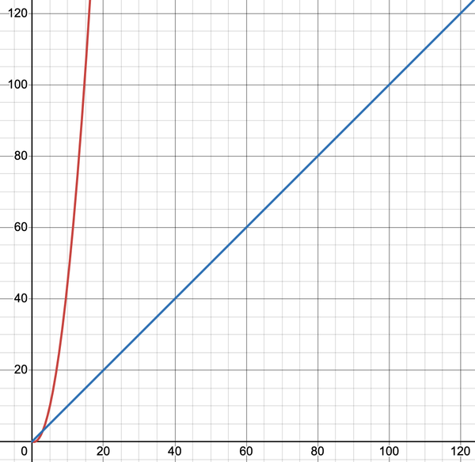
蓝色：节点。红色：连接。
如果你想搭建一个竞争性的电话网络，抢到 1% 用户并不等于拿到 1% 价值，你可能只提供了 0.01% 的价值。
WhatsApp 几乎是这个现象的教科书案例。它在美国之外的即时通信领域几乎统治一切，除非政府干预，否则很难被颠覆。用这个视角看，Facebook 花 190 亿美元收购 WhatsApp 就完全说得通。
不过话说回来，普通风投的智力水平通常也就机场畅销书那一档，他们很爱拿梅特卡夫定律为最新创业项目的离谱估值背书。我认为梅特卡夫定律方向是对的，但它被滥用得太厉害，最终成了一句终止思考的陈词滥调。
社交网络并不是完全连通图。 Facebook 的核心卖点恰恰是你不会和所有人连接，而只是和朋友连接。当你在社交网络里看到 66 条连接，它并不像前面那个 12 人的稠密网络，66 条连接更接近这样：
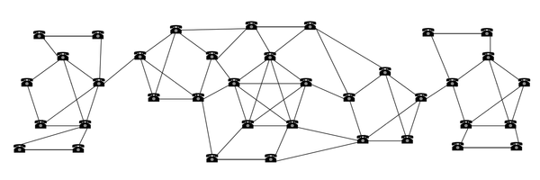
这哥们无处不在，连我的“可能认识的人”里都有。
当然，我大学即兴剧社那帮老朋友彼此之间很密集，但我们和莱索托的陌生人之间还是隔着好几层关系。
在计算机科学里，这叫稀疏网络，它会直接影响网络的韧性。如果图里的关键连接者流失，网络就会碎裂成更小、更弱的子网络。相比把全世界从电话或邮件系统迁走，把最亲近的家人朋友从 Facebook 迁到私聊群其实容易得多。
为了对冲这一点，每个社交网络都会不遗余力地把你和更多人连起来，不管你愿不愿意。Facebook 发现你很多朋友关注了某人、但你没关注时，就会把那人塞进“你可能认识的人”里，帮助它补全图谱。一个冷知识：我有很多演员朋友，所以系统偶尔会给我推荐我根本没见过的明星。
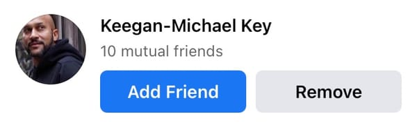
这哥们无处不在，连我的“可能认识的人”里都有。
在 2000 年代后期，搭建社交图谱是个缓慢过程，你得手动一个个搜朋友。这让 Facebook 的社交图谱成为它最有价值、也最拼命保护的资产。
Twitter 曾尝试扩展图谱，做了个连接 Facebook 的网页工具，帮你在 Twitter 上找到同一批朋友。Facebook 发现后，直接断了接口。Apple 也给它命运多舛的 Ping 做了类似工具，Facebook 同样封掉，因为它知道这会引发冷战。
iPhone 把社交图谱从 Facebook 的掌控里释放出来。应用能一键上传通讯录后，新平台自举图谱变得轻而易举。于是有了 Snapchat 和 TikTok，更不用说像 VSCO、Goodreads、Strava 这类更小的兴趣型网络。
梅特卡夫定律的另一个缺陷是：连接并不等价。如果你认同 Dunbar Number，一个人有意义关系的上限大约是 150。这意味着社交网络真实增长更接近线性而非指数，也远没有投资人说的那么刀枪不入。
Different Types of Graphs
所以我们有 WhatsApp 这种纯网络；有 Facebook 这种稀疏图；还有像 Digg 和 Twitter 这样的兴趣图谱，不仅稀疏，还是单向连接。很糟。
这些网络里很多连接极不对称：单个账号背后跟着几万到几百万粉丝。用连 VC 都能听懂的话说，这些人就是超级连接者。
在兴趣图谱里，超级连接者不可避免。它们有利于增长，但也带来风险：这些连接者一旦迁移，他们的追随者……也会跟着走。换句话说，失去 Taylor Swift 会是灾难。
超级连接者还催生了一种你无法在实验室合成的网络效应：
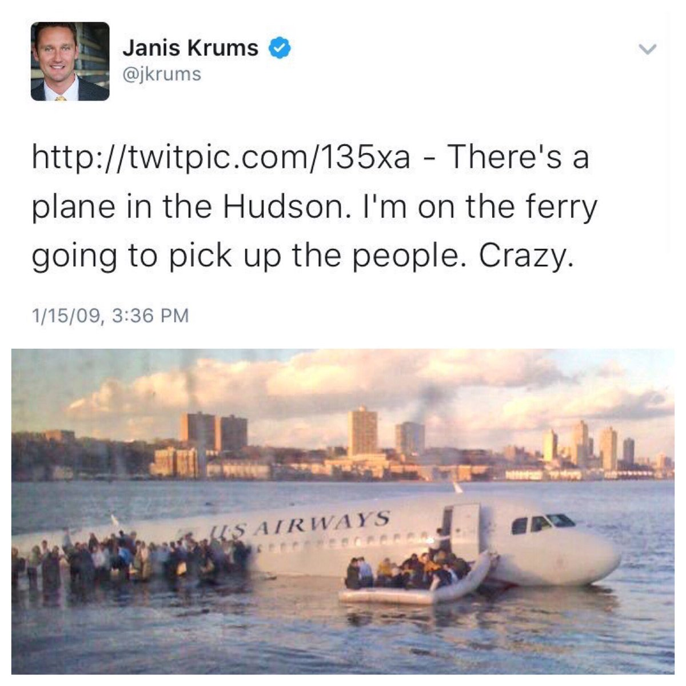
2009 年 1 月，“哈德逊河奇迹”把 Twitter 定义成了突发新闻平台。它不再只是极客在《迷失》播出时互相直播吐槽的网站，它成了全球对话的一部分。那一刻我知道自己必须去 Twitter 工作。
这件事发生在公司成立两年半后，它之所以可能发生，靠的是数百万用户，再加上超级连接者把故事在几秒内扩散到全世界。
网络效应并不会让服务不朽。Twitter 大概是 40% 社交网络、40% 兴趣图谱、20% 文化现象。所以我把 Twitter 的衰退放在 Digg 和 MySpace 之间。也许我们还只是身处一场多年过程的中段，但如果 Twitter 失去超级连接者，我觉得下滑会很快加速。
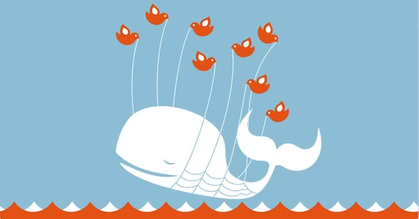
Slowly, Then All at Once
网络效应会产生强大的惯性。要维持领先地位，头部网络只需以合理节奏持续演进产品。回头看，MySpace 和 Digg 的死亡其实完全可以避免。
2005 年，新闻集团收购了 MySpace。据前员工所述，新闻集团重心是赚钱，而不是和后起之秀 Facebook 竞争。这和我和朋友作为用户当年的体感一致。网站上有传奇级别的 XSS 黑客事件，广告烦人，用户还能把个人主页魔改得面目全非，整体观感就是廉价又粗糙。
事情其实不用讲得太复杂：“MySpace 变得不好玩了。”最终，我社交圈的人都意识到：转去 Facebook 的痛苦，已经小于继续忍受垃圾信息、黑客攻击和自动播放 Evanescence 的主页。
对比之下，Facebook 看到 Vine 威胁到 Instagram 时，迅速上线视频功能，直接掐死了 Vine 的增长。看到 Snapchat 成为下一个威胁时，它很快推出 Instagram Stories。当它意识到 WhatsApp 已势不可挡时，也立刻掏出支票本。
当然，不是所有产品改动都朝着正确方向。2008 年 Digg 还在巅峰，却连续做出一串糟糕决策，比如让人厌烦的 Digg Bar。这类失误未必会立刻杀死网站，但会触发一种讨论：“要是情况彻底失控，我们去哪儿？”等到 Digg 2010 年灾难性改版上线时，大家已经知道答案了。
Twitter 长期被批评进化太慢，根源是害怕把用户赶走。在被收购前，它最不受欢迎的改动主要是封杀第三方客户端。每次反弹后，公司又会让步，想办法把最受欢迎的第三方客户端保留下来。
Twitter 的多数新产品上线时反应都只是“还行”，比如它对 Snapchat Stories 的回应， 。偶尔它也会发布真正的爆款，比如 Twitter Spaces，成功把一度估值 40 亿美元的硅谷宠儿 Clubhouse 打没了。
收购之后，几乎每一次产品改动都在“翻车”和“灾难”之间。就像当年新闻集团对待 MySpace 一样，新管理层把重点放在赚钱上。他们削减了 Trust and Safety 部门，让平台充斥骗局、色情机器人和仇恨言论。
新的“Twitter Premium”让事情更糟。认证徽章可付费购买后，冒充他人变得轻而易举。付费账号还能获得算法加权，让最差的用户花钱放大自己的声音。再加上按浏览量给钱，更是激励了钓鱼式愤怒内容。
如果你让别人说说过去两年 Twitter 有什么改进，他大概会提 Community Notes，一个由 建立的功能。它今天被高度称赞，是因为平台几乎只剩下它还勉强承担着“内容治理”的作用。要是这些志愿者也被赶走，平台就会滑向 8chan。
我不打算在这里展开讲 Elon Musk 的政治立场，但必须指出：Rupert Murdoch 至少知道把个人政治偏好留在 Fox News。你刷 MySpace 或看《辛普森一家》时，不会觉得自己在给右翼站队。Musk 则反过来，主动把 Twitter 塑造成“特朗普的平台”。对很多人来说，继续留在平台本身就像一种政治表态；无论立场如何，普通人都不想把这种戏剧性冲突带进生活。大家来社交媒体，是为了看沙雕梗图和猫片。
我还能继续列举 Twitter 的糟糕操作，比如得罪广告主、混乱裁员，以及亲自干预算法。但事情也不必说得那么复杂。对包括我在内的很多人来说，Twitter 就是变得不好玩了。
那该去哪？现在有三个 Twitter 替代品，它们对“Twitter 到底是什么”给出了不同答案。
Option 1: Mastodon
Mastodon 把 Twitter 看作公共基础设施。这个 2016 年上线的非营利项目认为，Twitter 应该像电子邮件一样运作，不由任何单一中心控制。你不是直接向 Mastodon 组织注册，而是向某个 Mastodon 服务商（“实例”）注册，就像你注册邮箱时会选 Gmail 或 Yahoo。
任何去中心化方案都比中心化替代品更复杂。90 年代美国人通过 AOL 才普遍接触电子邮件，这很合理。话虽如此，我不觉得 Mastodon 在简化这些概念上做得差。我的问题是产品本身太不精致了，这对用过开源消费产品的人并不意外。
于是 Mastodon 聚集了大量乐于在 Linux 上折腾 WiFi 的人。作为开发者，这没问题，我本来就是这群人之一；但我的非技术朋友几乎不可能加入。很可惜，因为 Mastodon 是唯一一个在真诚推进去中心化的平台。
Mastodon 目前有接近100 万活跃用户。它这种温和成功本该成为 Twitter 的煤矿金丝雀。当这么多人愿意忍受如此粗糙的体验时，你就该知道，大规模出走已经在门口了。
Option 2: Threads
Facebook 的 Threads 更像 Facebook，而不是 Twitter。是的，你可以关注别人，但你会被强行喂一个算法时间线，里面充满你没关注的人。Facebook 对 Twitter 的理解，不过是一个无限多巴胺工厂，唯一目的就是浪费你的时间。
注册时，Threads 会根据你在 Instagram 的关注关系做推荐。这让它一夜爆量，但结果证明：Instagram 网红更适合“被看见”，不适合“被听见”。比如因为算法会抬高回复很多的帖子，你时间线里的每条内容都像是一个“低门槛提问”，Google 一搜就能回答。
如果只用一个词概括 Threads 的气质，那就是“烦人”，看起来 Facebook 也意识到了同样的问题。

我不反对把算法时间线作为一个选项。对新用户来说，在他们还没建立起有意义的兴趣图谱前，这是一条不错的上手路径。即便是重度用户，也能从算法流里发现自己错过的好内容。但 Facebook 的算法服务的是它自己，不是用户。
去年冬天，算法不知为何开始推送带有偏见的帖子。Facebook 调了参数把它压下去，但那并非出于价值立场。Threads 会降低一切“有争议”内容的权重，包括政治和新闻。Facebook 想把 Threads 做成一个温吞的品牌推广平台，这意味着它永远不可能成为全球公共广场。
Option 3: Bluesky
Bluesky 很成功地复刻了 Twitter 那种有活力、怪诞、好笑的社区气质。从产品角度看，它几乎每件事都做对了：体验精致，同时提供按时间排序和算法推荐两种信息流，也理解如何增长兴趣图谱，比如用 Starter Packs 快速把新用户连接到兴趣圈。
Twitter 的文化很大程度上受益于它在 2007 年西南偏南大会的爆红。Bluesky 的早期社区也有类似组合：艺术家加上有趣的怪人。随着近期用户激增，Bluesky 似乎已经跳出早期尝鲜圈层，开始吸引主流媒体和名人加入。像科学 Twitter、黑人 Twitter，甚至桌游 Twitter这样的子社群都在迁移。对于一个正式开放注册还不到一年的服务，这很惊人。
我喜欢作为产品的 Bluesky，但我对作为风投支持的营利公司 Bluesky 保留意见。比如它由加密圈人士组建，并且与加密世界有深层联系。它的早期投资方包括 Protocol Labs，这家公司做了一个失败、缓慢、破碎的分布式文件系统，唯一成功是拉抬配套代币 FileCoin。它一度冲到 191 美元，现在交易价大约 5 美元。我们确实应该对那些 FileCoin 接盘者说声“谢谢”，是他们间接资助了 Bluesky。
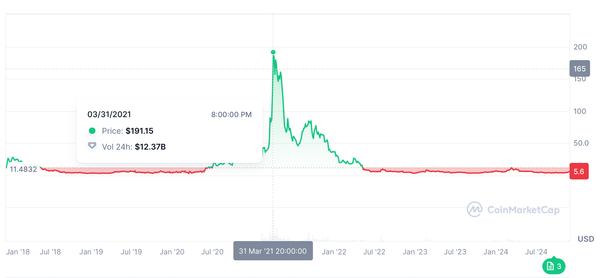
Bluesky 走的是典型加密营销路线：把用户动员到某个“伟大事业”之下，同时淡化自身逐利动机。他们反复强调自己注册成 Public Benefits Corporation，但这几乎没什么实际意义。
Bluesky 宣称自己不怕亿万富翁收购，这要么是天真到不切实际，要么是故作聪明。他们宣称平台开放、去中心化，这在很大程度上都是胡扯。公司随时可以像 Twitter 当年封杀第三方客户端那样切断网络访问。而所谓“你可以自己起一个 Bluesky 克隆”也意义不大，因为社交网络的价值在用户和网络效应，不在你的技术栈。
你当然可以觉得我太愤世嫉俗，但当某人说话像骗子、做事像骗子、融资对象也像骗子，他就该接受骗子级别的审视。
即便你给他们最大的善意解读，Bluesky 至今也只融到 2300 万美元；要达到 Twitter 规模，它还需要数亿美元。这个过程中，它必然要把越来越多控制权让渡给投资人，而投资人最终会要回报。
Bluesky 即将试验的订阅模式，在当前体量下也许能赚点小钱。从长期看，它填不平运营 Twitter 级规模所需的持续资本开支。等到不得不真正变现时，它要么上广告，要么发个“BlueskyCoin”来收割。
但现实一点：大多数人并不关心技术细节或公司治理。就大众市场而言，Bluesky 比 Twitter 更好玩、比 Mastodon 更友好，这就是它爆发的原因。Worse is better。
Bluesky 也可能走上毁掉 Twitter 的同一条路，十五年后我们也许会再进行一模一样的讨论。但那也已经算是很长的一段好时光了。你养宠物时本就知道它总有一天会死。别只盯着结局，尽量享受你拥有它的时间。
旧 Twitter 会变成什么样？这轮出走终会放缓，但它的麻烦才刚开始。竞争对手不需要把 Twitter 现有用户全部抢走就能摧毁它，只要截走新用户增量，网站就会在自然流失中下滑。
反直觉的是，用户变少反而也提高了它活下去的概率，因为运行成本下降了。若它能扛住130 亿美元悬空债务，它甚至可能像贝索斯养《华盛顿邮报》那样，长期作为 Musk 的个人爱好活着。
虽然我认为 Bluesky 会赢，但它不会达到前辈那样的文化影响力。Twitter 是一个时代遗物，诞生于所有人都在摸索社交媒体形态的年代。曾有短暂一刻，我们似乎以为世界只会剩 Twitter 和 Facebook 两大网络。
现在我们知道那不可能。即便拥有最顶级增长黑客、最聪明算法和最有名名人，建立在短文本上的兴趣图谱仍然是一个相对小众的品类。它没有 Instagram，乃至如今 TikTok 那样的大众吸引力。Twitter 或许是新闻爆发地，但它的影响力一直高于它的活跃用户体量。
如果 Twitter 当时顺着这个现实走，也许会更好。它却试图成为另一个 Facebook，而彼时已有一个干得不错的 Facebook。我觉得 Twitter 的运营问题被它对增长的执念放大了，因为它把“互动”放在“价值”之前。
我 2014 年就离职了，不知道后十年具体发生了什么，但在我看来，增长和毒性上升几乎是并行的。引用转发也许提升互动，但也鼓励了羞辱围攻、群体霸凌和“今日主角”式的网络景观。
在 Twitter，VIT（“Very Important Tweeters”，非常重要的推主）团队曾引以为傲：这是唯一一个名人不愿把账号密码交给经纪人代管的平台。那时候推文更像发帖者真实意图的表达。我觉得随着平台毒性加剧，这种原始感消失了。对文化偶像来说，公开真实自我已经太危险。
看到 Bluesky正面处理这些产品问题让我有点希望，但万一它只是创可贴呢？也许当你把所有人塞进世界最大的聊天室，就会激励最坏行为；任何达到 Twitter 规模的网络都注定像巴别塔那样把用户重新打散。
也许下一个伟大网络不是单数，而是 Bluesky、Mastodon、Goodreads、Strava、Letterboxd、Glass、一百个 subreddit 和分布在互联网上的一百万个微型社区。也许这种碎片化社交生态本身就是好事。
过去两年我的生活明显变好了。我把更多时间放在我们的产品上，也因此做出了公司历史上一些最大的发布。我甚至可能要把公司 50% 的营收增长，部分归功于我减少了刷 Twitter。
我仍会在网上发内容，但已经分散布局。我在这个网站和我的 YouTube 频道发布更完整、更有思考的长文；我在我的 Mastodon发技术热评；我在 BlueSky发公告，也顺便分享我的胶片摄影实验。
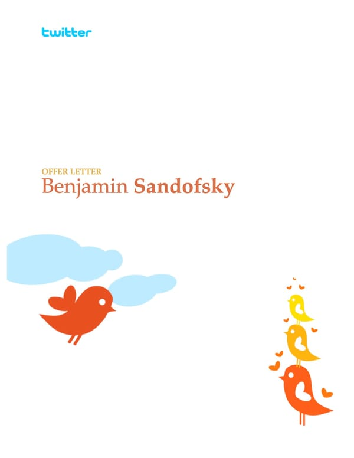
十年前我离开 Twitter 时，那感觉远不止离开一份工作。我在那家公司结交了人生中一些最好的朋友，也知道我们的人生会走向不同方向。结果是，其中大多数连接直到今天都还在。
有时我也怀疑自己是不是做错了职业选择。我担心人们只会记得我在 Twitter 的经历。事实证明我错了，如今大多数人记得的是我离开之后做的那些事。
死亡是生命的重要组成。作为一个物种，没有死亡我们就无法进化。你的身体每七年会替换掉几乎所有细胞。每隔七年，旧的你就死去一次。死亡不必可怕，它也可以是一次重生机会。尽量把握它。